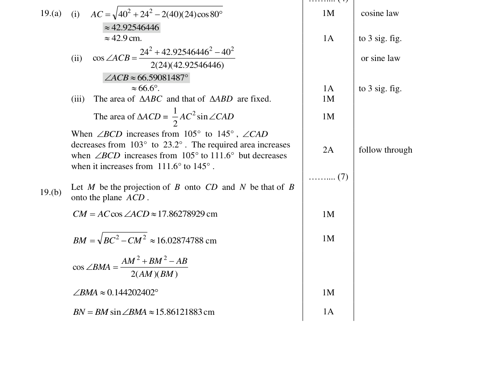

2015 DSE 數學 P1 Q19 答案＋詳解
題目（中文卷）
圖 3(a) 中，$ABCD B'$ 為五邊形紙卡。已知 $AB = AB' = 40 \text{ cm}$、$BC = B'D = 24 \text{ cm}$ 及 $\angle ABC = \angle AB'D = 80^\circ$。

(a) 假定 $105^\circ \leq \angle BCD \leq 145^\circ$。
(i) 求 $A$ 與 $C$ 間的距離。
(ii) 求 $\angle ACB$。
(iii) 描述當 $\angle BCD$ 由 $105^\circ$ 增加至 $145^\circ$ 期間該紙卡的面積如何變化。試解釋你的答案。
(b) 假定 $\angle BCD = 132^\circ$。將圖 3(a) 中的紙卡沿 $AC$ 及 $AD$ 摺起，使得 $AB$ 與 $AB'$ 連接成角錐體 $ABCD$，如圖 3(b) 所示。求角錐體 $ABCD$ 的體積。 N. (a) (3 分) N. (b) (3 分) N. (i) (3 分) N. (ii) (3 分)
試卷完 —
English version（英文卷題目）
In Figure 3(a), $ABCDB'$ is a pentagonal paper card. It is given that $AB = AB' = 40 \text{ cm}$, $BC = B'D = 24 \text{ cm}$ and $\angle ABC = \angle AB'D = 80^\circ$.

Figure 3(a)
Figure 3(b)
(a) Suppose that $105^\circ \leq \angle BCD \leq 145^\circ$.
(i) Find the distance between $A$ and $C$.
(ii) Find $\angle ACB$.
(iii) Describe how the area of the paper card varies when $\angle BCD$ increases from $105^\circ$ to $145^\circ$. Explain your answer.
(7 marks)
(b) Suppose that $\angle BCD = 132^\circ$. The paper card in Figure 3(a) is folded along $AC$ and $AD$ such that $AB$ and $AB'$ join together to form a pyramid $ABCD$ as shown in Figure 3(b). Find the volume of the pyramid $ABCD$.
(6 marks)
試卷完 —
官方評卷參考（Marking Scheme）

考評報告
良好。很多考生能得出A與C間的距離。良好。很多考生能得出∠ACB。甚差。大部分考生未能描述當∠BCD由105°增加至145°期間該紙卡的面積如何變化。甚差。大部分考生在求角錐體ABCD的高時出現困難,因此未能得出角錐體ABCD的體積。
相關課題
技能分析（呢題考咩、陷阱喺邊）
- 主課題
- 圓形幾何
- 相關課題
- 圓形幾何、三角學與解三角形